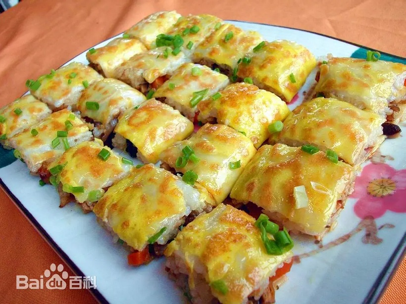
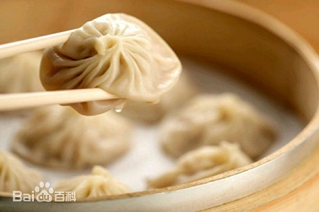
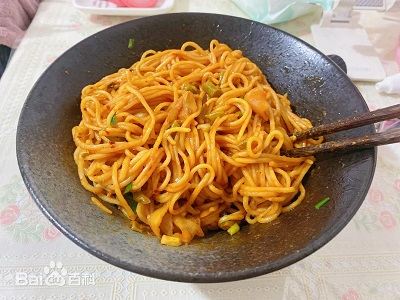

| 回到寝室主页 | ||||
| 首页 | 美食 | 景点 | 历史 | 疫情 |
|  | 三鲜豆皮是糯米和豆皮合作而成，以馅中有鲜肉、鲜蛋、鲜菇（鲜笋）而得名。三鲜豆皮形方而薄，色金而黄，味香而醉。三鲜豆皮绝对不逊色于“汉堡包”和“披萨饼”。豆皮的“豆”必须是脱壳绿豆；豆皮的“皮”必须是精制米浆；豆皮的馅，必须是湘产糯米；豆皮的形，必须是方而薄；豆皮的色，必须是金而黄；豆皮的味，必须是香而醉。难怪它一举夺得过中国饮食行业的最高荣誉“金鼎奖”。 在武汉，以老通城的三鲜豆皮历史最为悠久，也最负盛名。“老通城”是一家酒楼的名字，创建于1931年，位于汉口中山大道大智路口，以经营三鲜豆皮闻名，素有“豆皮大王”之誉。到武汉而不去“老通城”，就难算得是品尝过“汉味”美食。“老通城”之所以有名，一则为有独特的名吃“三鲜豆皮”；二则因是“老字号”68年沧桑；三则改革之最，全省餐饮业首家股份公司；四则布局巧妙，文化色彩浓郁。“老通城”几乎成为外地宾客对武汉市的别称了。 |
|||
武汉的四季美汤包是在苏式汤包的传统作法基础上不断改进形成的。这种汤包具有皮薄、汤多、馅嫩、味鲜的武汉风味特色，有虾仁汤包、香菇汤包、蟹黄汤包、鸡茸汤包、什锦汤包等新品种，花样繁多，风味独特。不仅为武汉人所喜爱，而且在全国也颇有名气。有经验食客的吃法为：先轻轻咬破汤包的表皮，慢慢吸尽里面的汤汁，然后再吃汤包的面皮和肉馅。只有这样才能真正领略到小笼汤包的特有滋味。 "四季美"是坐落在汉口中山大道江汉路口附近的一家小吃店的店名，意为一年四季都有美食供应，如春炸春卷，夏卖冷食，秋炒毛蟹，冬打酥饼等，1927年开业，生意兴隆;后有特级厨师钟生楚等在该店制作江苏风味武汉化的小笼汤包应市，受到顾客的好评，被誉为"汤包大王"，使该店变为主要供应小笼汤包的汤包馆。他们制馅讲究，选料严格，先将鲜猪腿肉剁成肉泥，然后拌上肉冻和其他佐料，包在薄薄的面皮里，上笼蒸熟，肉冻成汤，肉泥鲜嫩，七个一笼，佐以姜丝酱醋，异常鲜美。为了满足不同顾客的需要，除鲜肉汤包外，他们还应时制作蟹黄汤包、虾仁汤包、香菇汤包、鸡茸汤包和什锦汤包等。 |
 | |||
|  | 热干面是武汉最出名的小吃之一，有多种做法，其采用碱水面，并以食油、芝麻酱、色拉油、香油、红油、细香葱、大蒜、萝卜丁、酸豆角、卤水汁、生抽、醋等为辅助材料。热干面色泽黄而油润，味道鲜美，由于热量高，也可以当作主食，营养早餐，补充人体所需的能量。 热干面源于三十年代初期，汉口长堤街卖汤面的蔡明伟。蔡明伟是黄陂蔡榨人，他的汤面做得非常受欢迎，客人经常排队要等很长时间才能买到，很多客人等不及走掉了，蔡明伟做生意很会动脑筋。为了加快出货量，通过反复试验，他终于摸索出一套“掸面”的工艺——就是先把面煮七八成熟，然后快速降温并均匀抹上油，这样卖面时，出货量就快了。有一次蔡明伟在长堤街看到一家麻油作坊，看见他们从芝麻中提取麻油后，芝麻酱闲弃在一边，香气扑鼻，他灵机一动；何不将芝麻酱加进面里试一下呢，于是蔡明伟向麻油作坊老板购买了些许芝麻酱回家。同样经过多次反复试验，他觉得满意了，身边的人都说好吃，这时候他才信心满满推出他的新产品上街叫卖。热干面——这个武汉人民最爱的小吃就这样诞生了。此时蔡明伟给这个面起了个名叫“麻酱面”，直到1950年工商登记时才正式叫“热干面”。 |
|||